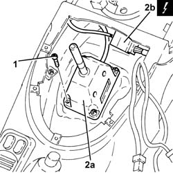

2127A12 HAND LEVER OF MANUAL GEARBOX WITH HYDRAULIC SELECTION - R R
- Path
- Procedures > 21 GEARBOX UNIT > 2127 HYDRAULIC TRANSMISSION EXTERNAL LINKAGE > 2127A HYDRAULIC TRANSMISSION EXTERNAL LINKAGE > 2127A12 HAND LEVER OF MANUAL GEARBOX WITH HYDRAULIC SELECTION - R R
- Kind
- repair procedure (removal / refitting; the operation number is the code)
- Applies to
- engines: 2.0 JTS; all production periods; only with equipment: Smart gearbox
- Interactive page
- https://sloeber94.github.io/elrnDB-aGt/en/#/125001273
Applies to: engines: 2.0 JTS; all production periods
 Removing
Removing
 Refitting
Refitting- Make sure that the ignition key is in the OFF position, then disconnect the battery terminal (-).
Description | Connector | |
|---|---|---|
- | Battery | See A001 Battery |
- Remove the trim on the tunnel cover.
- Op. 7065C42 ASHTRAY (ONE) R+R
- Op. 7040L37 GEAR LEVER PLATE - R R
- Release the electrical connection for the electro-hydraulic selection manual gearbox control lever from the fastening.
- Undo the bolts fixing the electro-hydraulic selection manual gearbox control lever.
- Remove the electro-hydraulic selection manual gearbox control lever (2a) after having disconnected the electrical connection (2b).
Description | Connector | |
|---|---|---|
2b | Gear controls | See H37 GEAR CONTROLS |

Applies to: engines: 2.0 JTS; all production periods
Refitting
Removing- Connect the electrical connection, then place the electro-hydraulic selection manual gearbox control lever back in its housing and secure it using the bolts.
- Secure the electrical connection for the electro-hydraulic selection manual gearbox control lever using the fastening.
- Op. 7040L37 GEAR LEVER PLATE - R R
- Op. 7065C42 ASHTRAY (ONE) R+R
- Place the trim in its housing on the tunnel cover.
- Connect the negative battery terminal (-).